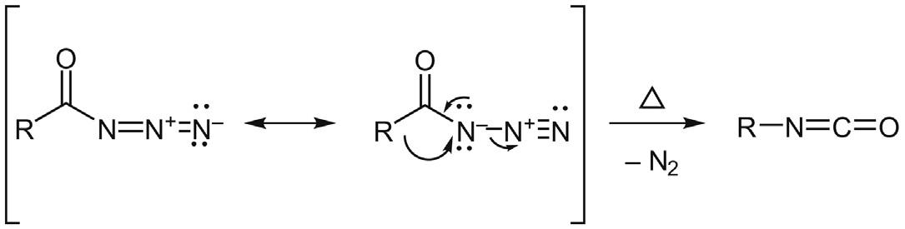
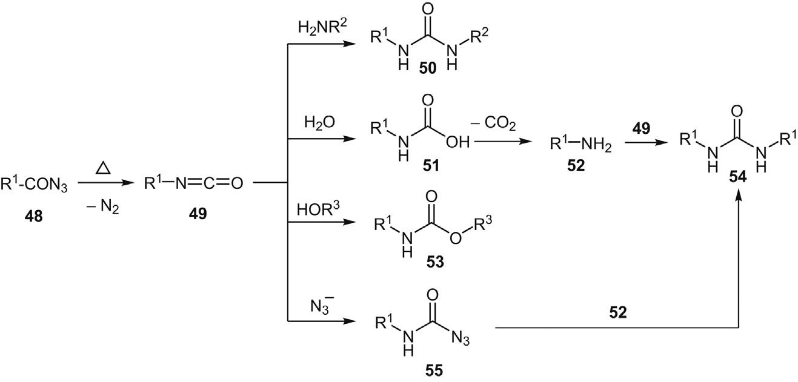
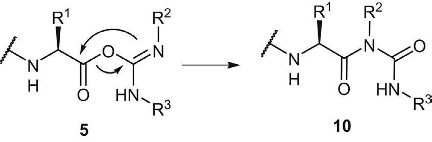
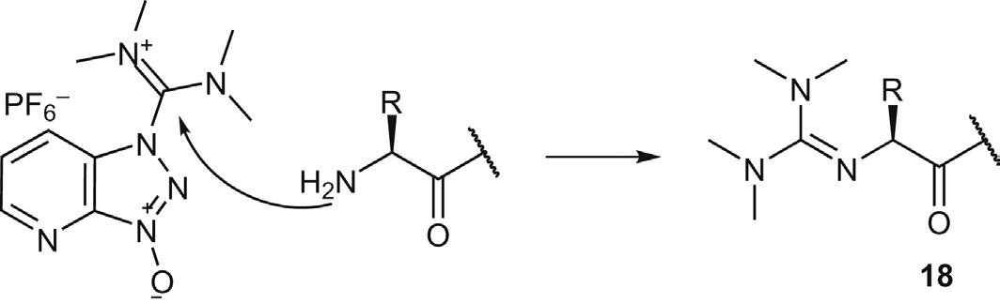
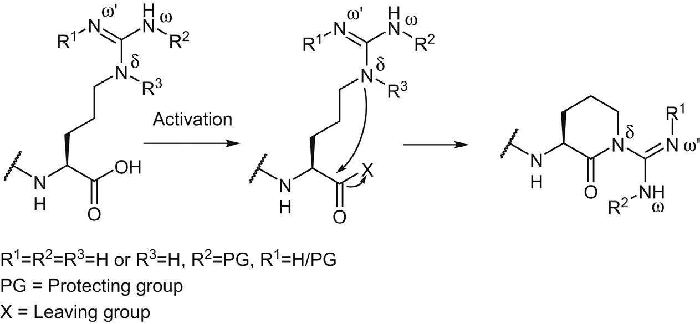
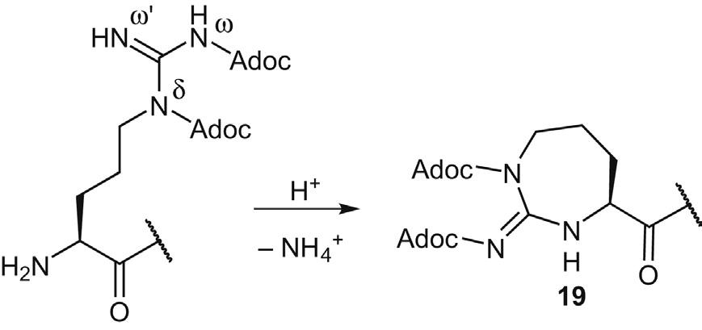
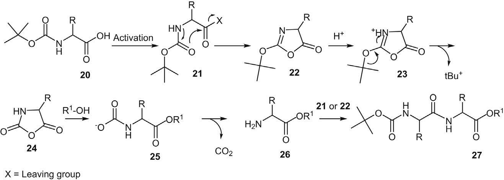
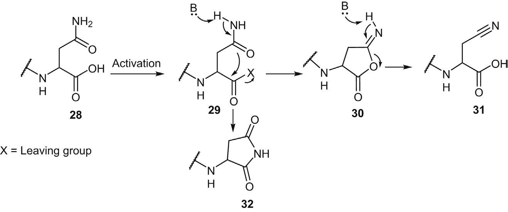

Chapter 5 氨基酸/肽羧基活化时的副反应
Side Reactions Upon Amino Acid/Peptide Carboxyl Activation
学习日期：2026-04-02
本章系统阐述了氨基酸/肽羧基活化过程中可能发生的各种副反应。羧基活化是多肽合成中的关键步骤之一，涉及将氨基酸或肽段的羧基转化为活性酯，以便与另一个氨基酸或肽的氨基进行酰胺键形成。在这个活化过程中，可能发生多种副反应，包括侧链修饰、氨基酸冗余掺入、肽链末端封端（终止肽链延长）、反应组分转化为惰性或低活性物质等。这些副反应会严重影响目标肽的产率和纯度，因此需要深入理解其机理并采取相应的预防措施。
碳二亚胺类试剂（如DIC和DCC）是最常用的羧基活化试剂。活化机理：碳二亚胺从羧酸夺取质子形成质子化碳二亚胺，去质子化的羧酸根对其进行亲核进攻，形成活性O-酰基异脲中间体，该中间体再被氨基亲核试剂进攻形成酰胺键。 副反应机理：O-酰基异脲中间体可通过分子内酰基O→N迁移转化为惰性的N-酰基脲。这种副反应不仅降低偶联产率，还会给产物纯化带来挑战。 影响因素： • 温度：降低反应温度可有效抑制N-酰基脲形成 • 溶剂极性：DCM、CCl₄、苯中副反应减少；DMF、ACN、DMSO或水中副反应急剧增加 预防策略： • 加入HOBt或HOSu等弱酸性添加剂 • 添加剂可质子化O-酰基异脲中间体，降低氮的亲核性 • 将不稳定的O-酰基异脲转化为稳定的活性酯 • 同时降低氨基酸/肽的消旋化程度

Figure 5.1 碳二亚胺介导的羧基活化和酰胺键形成机理

Figure 5.2 O-酰基异脲通过O→N酰基迁移形成N-酰基脲
脲盐/胍盐类偶联试剂（如TBTU、HBTU、HATU）已广泛应用于多肽合成。HATU介导的氨基酸/肽活化机理：氨基酸/肽被DIEA处理转化为羧酸盐，羧酸盐被HATU衍生化为高活性O-酰基脲盐中间体，中间体可被HOAt捕获形成活性酯，活性酯可发生酰基O→N异构化生成低活性N-酰基衍生物，最后活化的氨基酸/肽经氨解提供目标酰胺化合物。 胍化副反应机理：氨基功能团本应被羧酸衍生物酰化，但可能同时与脲盐/胍盐发生竞争反应，产生带有胍基的副产物。胍化衍生物在后续肽合成步骤中（甚至在高浓度TFA中）保持化学稳定，一旦在肽Nα功能基上发生胍化，肽链延长将不可避免地终止，产生截短的肽杂质。 胍化副反应的4个主要成因： 1. 羧基化合物与脲盐/胍盐、DIEA同时加入氨基衍生物，未进行单独预活化处理 2. 羧酸反应活性太低，在预活化时间内无法定量转化为活性酯 3. 实际使用的脲盐/胍盐当量大于羧酸底物（化学计量不当） 4. 头尾分子内环化时，羧酸和氨基同时存在于一个母体肽分子中 预防策略： • 预活化：羧酸化合物单独预活化，避免未消耗的偶联试剂与氨基组分反应 - 注意：延长预活化可能导致消旋化增加 - 需要通过DoE等系统性研究优化工艺参数 • 调整化学计量：略微降低偶联试剂当量（如使用0.95当量） - 会导致5%羧酸组分损失，但可被过量的羧酸衍生物补偿 • 选择合适的偶联试剂：对于严重胍化副反应，选用膦盐类试剂如PyBOP或PyAOP - 膦盐对氨基功能基惰性，不会引起胍化 - 特别适用于肽头尾环化和汇聚式肽段缩合

Figure 5.3 HATU介导的羧基活化和肽键形成

Figure 5.4 HATU引导的氨基胍化
精氨酸胍基侧链由于强亲核性可能在肽合成中诱导多种副反应。理论上所有Arg胍基侧链的Nδ,ω,ω'功能基都应被适当保护以避免潜在副反应。 δ-内酰胺形成机理： Arg胍基侧链的未保护Nδ可能对活化的羧酸根发起亲核进攻，引发Arg分子内环化形成六元环δ-内酰胺衍生物。Nω或Nω'的保护基可通过吸电子效应或位阻效应限制Nδ的亲核性。 对肽合成的影响： 1. SPPS中作为单个氨基酸砌块：δ-内酰胺副产物活性较低会被洗涤除去，导致原料损失产生des-Arg缺失序列杂质 2. 片段缩合中的C端Arg：δ-内酰胺形成将失活N端肽组分，终止目标肽段偶联 影响因素：微波介导的肽合成会剧烈刺激Arg δ-内酰胺形成 预防策略： 1. 理性保护Arg胍基侧链 - Nitro（NO₂）保护基：优异的吸电子效应，大幅降低Nδ亲核性 - Nd,w-bis(Adoc)-Arg：可完全抑制δ-内酰胺形成 2. 优化预活化工艺参数：精细调节预活化时间和温度

Figure 5.5 Arg羧基活化时δ-内酰胺的形成
Boc-氨基酸在某些羧基活化条件下可能发生断裂副反应，转化为相应的NCA衍生物。 NCA形成机理：Boc-AA-OH被DCC转化为活性酯，在无亲核试剂时发生分子内环化形成恶唑酮，被酸性添加剂质子化后经酸解脱叔丁基转化为NCA，最终与氨基酸酯反应生成Boc-二肽酯。 特点：NCA形成特别容易在DCM中发生，添加1当量吡啶可部分抑制。 氨基酸酰氯的不稳定性：Boc-和Z-氨基酸酰氯内在不稳定性使其不适用于肽生产。 Fmoc-氨基酸酰氯的优势：具有可接受的稳定性，Na-Boc/Z-AA-F（酰氟）可用于困难偶联，副反应显著减少。

Figure 5.7 Boc-氨基酸羧基活化时NCA形成及随后的二肽形成
最小保护策略已成功应用于逐步和汇聚片段缩合肽合成。使用侧链未保护的氨基酸残基或肽段可部分缓解引入侧链保护基带来的固有不溶性问题。 脱水机理： 1. 带游离酰胺侧链的Asn在羧基活化时转化为活性酯 2. 活性酯发生碱催化的分子内环化，形成异酰亚胺 3. 碱处理开环，形成β-氰基丙氨酸衍生物 4. β-氰基丙氨酸作为砌块被偶联试剂掺入肽链 5. 或者活性酯直接转化为天冬酰亚胺，再经氨解形成Asn相关衍生物 影响因素： • 不仅碳二亚胺介导偶联，脲盐/胍盐和膦盐介导的羧基活化均易感 • 由于脱水被碱催化，选择碳二亚胺偶联试剂并添加酸性N-羟胺添加剂可减轻副反应 • 使用预活化酯Fmoc-Asn/Gln-OPfp可抑制氰基副产物形成 重要提示： • 侧链未保护的Asn/Gln一旦组装到目标肽链，后续合成步骤不再遭受脱水副反应 • 掺入的β-氰基丙氨酸残基可通过HF甚至TFA处理再生为原始Asn 推荐策略： • 考虑到潜在的脱水副反应、Fmoc-Asn/Gln-OH在有机溶剂中的低溶解度和聚集倾向 • 推荐采用侧链保护的Asn/Gln种类作为肽合成砌块 • 最常用的酰胺保护基包括Trt和Xan

Figure 5.8 侧链未保护Asn羧基活化时脱水机理
HOSu是N-羟胺类偶联添加剂，DCC/HOSu广泛用作溶液相肽段偶联试剂。HOSu在易消旋化偶联反应中表现出优于HOBt的特性。 β-Ala-OSu形成机理： 1. DCC与一个HOSu分子反应形成O-琥珀酰亚胺基异脲 2. 另一个HOSu分子亲核进攻引发开环，形成加合物 3. 加合物经1,2-重排形成异氰酸酯衍生物（Lossen/Curtius/Hoffmann重排的关键步骤） 4. 异氰酸酯与第三个HOSu分子反应，形成不稳定的琥珀酰亚胺氧羰基-β-丙氨酸-羟基琥珀酰亚胺酯 5. 该中间体降解为β-Ala-OSu 6. β-Ala-OSu与活化氨基酸反应，将β-Ala掺入肽链 预防策略： • 在反应动力学差的氨基酸偶联中，用其他N-羟胺替代HOSu • 或在碳二亚胺加入后再添加HOSu，最小化碳二亚胺与HOSu的不良反应

Figure 5.9 DCC与HOSu反应形成琥珀酰亚胺氧羰基-β-丙氨酸-羟基琥珀酰亚胺酯的机理
HOOBt（3-羟基-1,2,3-苯并三嗪-4(3H)-酮）是常用的N-羟胺类偶联添加剂。 优点：提高偶联效率，最小化消旋化副反应；氨基酸HOOBt酯对醇解具有增强的抗性；适用于TFE等特殊溶剂。 开环副反应机理：HOOBt与DCC反应生成活性中间体，被另一个HOOBt分子亲核进攻，三嗪酮环开环形成2-叠氮基-4-氧-1,2,3-苯并三嗪-3-基苯甲酸酯，该活性酯与肽Na功能基反应终止肽链。 预防策略：优化工艺参数，DCC先与羧基组分预活化5分钟，再加入HOOBt。
CDI（1,1'-羰基二咪唑）可将羧基转化为酰基咪唑。活化机理：羧基将质子转移给CDI形成羧酸根和CDI负离子，羧酸根与CDI负离子反应形成混合酸酐，混合酸酐降解为酰基咪唑并释放CO₂，酰基咪唑被氨基进攻形成酰胺键。 CDI优势：副产物（咪唑和CO₂）易除去；可替代剧毒光气制备脲或氨基甲酸酯。 脲形成副反应：过量CDI与Na功能基反应形成咪唑甲酰胺衍生物，消除咪唑转化为异氰酸酯，异氰酸酯与另一个氨基酸/肽的Na反应形成脲衍生物终止肽链。 预防策略：避免过量CDI；用冷水洗涤活化溶液淬灭过量CDI。
碳二亚胺类偶联试剂也能与伯胺发生副反应，生成胍基衍生物作为杂质。如果氨基酸酯的Na被碳二亚胺修饰，生成的胍基中间体可通过分子内环化转化为乙内酰脲-2-亚胺衍生物。 影响因素：高温或酸性催化剂促进该副反应；Na质子化的氨基酸（如氨基酸酯的HCl盐）更易感；常规反应条件下程度基本可忽略。
酰基叠氮是最古老的氨基酸缩合方法之一，具有低消旋化倾向和与侧链未保护Ser/Thr/His/Trp兼容的优点。 Curtius重排机理：酰基叠氮加热释放N₂并发生1,2-重排，形成相应的异氰酸酯，构型保持不变。 副反应类型： 1. 与胺形成非对称脲（MW增加15 amu） 2. 水解形成氨基甲酸，脱羧生成胺，胺与另一异氰酸酯形成对称脲 3. 过量叠氮试剂与异氰酸酯形成氨基甲酰叠氮衍生物 4. 侧链未保护Ser/His的特殊环化反应 预防策略：缩短酰基叠氮存在时间；及时加入氨基组分；精确控制反应温度；优化叠氮化条件避免酰胺形成。
1. 羧基活化是多肽合成的关键步骤，涉及多种副反应风险 2. N-酰基脲形成：碳二亚胺活化时O-酰基异脲发生O→N迁移，可通过添加HOBt/HOSu抑制 3. 胍化副反应：脲盐/胍盐类偶联试剂与氨基竞争反应，可通过预活化、调整化学计量、选择膦盐试剂预防 4. δ-内酰胺形成：Arg活化时胍基侧链Nδ亲核进攻，需合理保护Arg侧链 5. NCA形成：Boc/Z-氨基酸活化时发生断裂，酰氟优于酰氯 6. Asn/Gln脱水：侧链未保护时发生碱催化脱水，推荐使用侧链保护 7. β-Ala掺入：DCC/HOSu反应形成β-Ala-OSu，可调整加料顺序预防 8. HOOBt开环：三嗪酮环开环终止肽链，需优化预活化工艺 9. CDI脲形成：过量CDI导致脲形成，需精确控制化学计量 10. Curtius重排：酰基叠氮转化为异氰酸酯引发多种副反应，需控制温度和时间